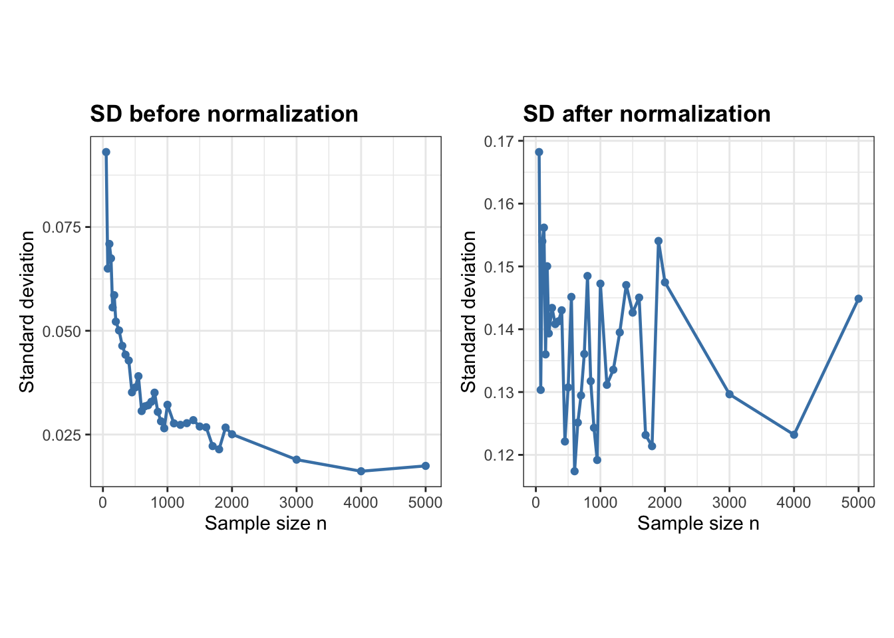
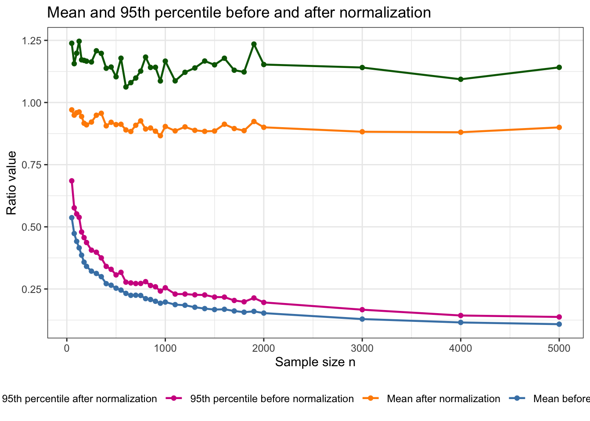
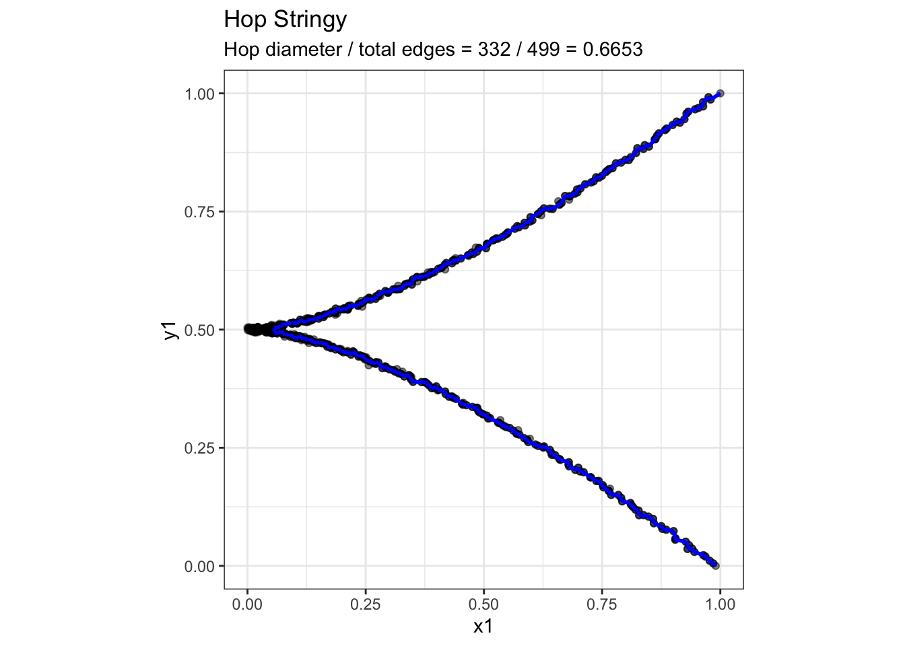

Here \(T_n\) is the Euclidean minimum spanning tree (MST) built on \(n\) random bivariate observations.
The denominator is the total Euclidean length of the MST,
\[
L_n
= {length}(T_n) = \sum_{e\in T_n}|e|.
\]
The numerator is the weighted graph diameter of the MST,
\[
D_n
= {diameter}(T_n)
= \max_{u,v\in T_n} d_{T_n}(u,v),
\] where \(d_{T_n}(u,v)\) is the length of the unique path in the tree from \(u\) to \(v\), using Euclidean edge lengths as weights.
Empirically, previous simulations suggested that the ratio does not rapidly decay toward zero. Around sample sizes near \(n=900\), the estimated 95th percentile of the noise distribution appeared to stabilize near \(0.1\). This motivates a more detailed investigation of the numerator and denominator separately.
Denominator: theoretical growth rate of total MST length
The denominator \(L_n\) is the part of the problem for which we do have strong theoretical guidance.
Steele (1988) studies Euclidean minimal spanning trees with power-weighted edges. In his notation, for points \(x_1,\dots,x_n\), the MST functional is
His main theorem states that, for iid observations in \(\mathbb R^d\) from a compactly supported distribution, if \(f\) is the density of the absolutely continuous part of the distribution, then
Thus, for two-dimensional data, the denominator has theoretical growth rate
\[
\boxed{
L_n= O(\sqrt n).
}
\]
Steele (1988) first proves the MST growth-rate result in the uniform setting, where the sample points are distributed in the unit cube. The result is then extended beyond the uniform case by adding a density correction. For a more general distribution with density \(f\), the limiting constant is modified by a factor of the form
\[
\int f(x)^{(d-\alpha)/d}\,dx.
\]
In the ordinary bivariate MST-length case, this becomes
\[
\int f(x)^{1/2}\,dx.
\]
This extension is important for my project because the simulations are based on bivariate noise distributions rather than only uniform samples.
However, there is one important technical caveat. The theorem in Steele (1988) is stated under compact-support assumptions. A standard bivariate normal distribution has unbounded support, so it falls outside the direct assumptions of the theorem. Therefore, for Gaussian samples, I use the \(\sqrt n\) scaling from Steele (1988) as a theoretically motivated benchmark for the denominator, not as a theorem that applies directly without further work.
Numerator: what is known about the MST diameter?
The numerator is
\[
D_n
=
\max_{u,v}d_{T_n}(u,v).
\]
This is the weighted longest shortest path in the MST. It is a global path functional: it depends on how many edges lie along the longest path and how their lengths accumulate.
This is different from the total MST length \(L_n\), which is a sum over all edges. It is also different from the longest single edge of the MST.
At this point, the exact theoretical growth rate of \(D_n\) is not given by the MST length theorem in Steele (1988).
Penrose’s longest-edge theorem and its limitation
Penrose (1997) studies the longest edge of the random Euclidean MST. Let
\[
E_n
=
\max_{e\in T_n}|e|.
\]
For uniform random points in the unit square, Penrose (1997) shows that the longest MST edge has the same asymptotic extreme-value behavior as the longest nearest-neighbor edge. In dimension \(2\), the result implies that
\[
n\pi E_n^2-\log n
\]
converges in distribution to a double-exponential limiting law (Penrose 1997).
Penrose (1997) also shows that very long MST edges usually behave like nearest-neighbor edges. In other words, the longest edges are typically attached to leaf vertices, or endpoints, of the MST.
This matters for the stringy05 index because the MST diameter is not just the longest single edge. The diameter is the length of a whole path through the tree. So the result in Penrose (1997) suggests that the longest individual edges are often at the outside of the tree, rather than forming the main interior path that determines the MST diameter.
The longest edge scale is therefore approximately
\[
E_n
\asymp
\sqrt{\frac{\log n}{n}}.
\] However, this is not the same as the stringy05 numerator.
The stringy05 numerator is
\[
D_n =
\max_{u,v} d_{T_n}(u,v),
\]
which is the length of an entire path. This path may contain many MST edges. Therefore, the theorem in Penrose (1997) does not give the growth rate of \(D_n\). It only gives the scale of the largest individual edge.
A simple example: longest edge versus MST diameter
Let’s imagine the MST is a path with five vertices:
Penrose’s longest-edge quantity looks only for the single largest edge in the MST:
\[
E_n=\max_{e\in T_n}|e|=0.12.
\]
So in this example, Penrose’s quantity is the edge \(BC\).
But the stringy05 numerator is the weighted MST diameter. It looks for the longest path in the tree and adds all edge weights along that path. Here the longest path is from \(A\)) to \(E\):
This shows why the result in Penrose (1997) is useful only as a weak lower bound. The longest single edge is always less than or equal to the weighted MST diameter, but it is not the same quantity:
\[
E_n\le D_n.
\]
Upper and lower bound for the MST diameter
Even though the longest-edge theorem in Penrose (1997) does not solve the diameter problem, it provides a weak lower bound.
For every weighted tree,
\[
\boxed{
E_n\le D_n\le L_n.
}
\]
The first inequality holds because the longest edge is itself the path between its endpoints in the tree. The second inequality holds because any path in the tree uses only a subset of the edges of the tree.
Combining the longest-edge scale from Penrose (1997) with the total-length scale from Steele (1988) gives
This is much smaller than the empirical values observed in simulation, which are closer to \(0.2\). Therefore, the observed stringy05 behavior cannot be explained by the longest single MST edge alone. The diameter appears to be driven by the accumulation of many edges along a long path.
Next step: study numerator and denominator separately
The next part of this analysis will study
\[
L_n=\operatorname{length}(T_n)
\]
and
\[
D_n=\operatorname{diameter}(T_n)
\]
separately.
The plan is:
Generate bivariate noise samples for a grid of sample sizes \(n\).
Record the total MST length \(L_n\) .
Record the weighted MST diameter \(D_n\).
Record the ratio
\[
R_n=\frac{D_n}{L_n}.
\]
For the denominator, the theorem in Steele (1988) suggests checking whether
\[
\frac{L_n}{\sqrt n}
\]
stabilizes.
For the numerator, the key empirical question is whether
\[
\frac{D_n}{\sqrt n}
\]
also stabilizes.
If both normalized quantities stabilize, then the ratio should stabilize near a positive constant:
This would support the empirical observation that stringy05 converges to a positive number, possibly near \(0.1\), rather than to zero.
Empirical check of the denominator growth rate
To check the theoretical growth rate of the denominator, I simulated independent bivariate observations from the uniform distribution on the unit square, which matches the setting used in Steele (1988). For each sample size, I repeated the simulation 100 times (just for testing), constructed the Euclidean minimum spanning tree, and recorded its total edge length,
\[
L_n = \sum_{e\in T_n}|e|.
\]
The simulation results were saved in separate files for different ranges of sample sizes and are combined below.
The result in Steele (1988) implies that, for bivariate uniform data, the total MST length grows at rate
\[
L_n \sim C\sqrt n,
\]
for some positive constant \(C\).
To compare the simulations with this theoretical rate, I first calculate the empirical mean MST length for each sample size. I then estimate the multiplicative constant \(C\) by fitting the relationship
\[
L_n \approx C\sqrt n
\]
through the origin.
Code
# Calculate the mean for each sample sizelength_summary <- combined_results |>group_by(n) |>summarise(mean_length =mean(total_mst_length),.groups ="drop" )# Estimate C in L_n = C * sqrt(n)length_fit <-lm( mean_length ~0+I(sqrt(n)),data = length_summary)C_hat <-unname(coef(length_fit)[1])C_hat
[1] 0.6576368
Code
# Theoretical curve based on the fitted constanttheoretical_curve <-data.frame(n =seq(min(combined_results$n),max(combined_results$n),length.out =500 )) |>mutate(theoretical_length = C_hat *sqrt(n) )
The following plot shows all individual simulation values of the total MST length. The blue line gives the empirical mean at each sample size, while the pink dashed line shows the fitted theoretical function
\[
\widehat C\sqrt n.
\]
If the denominator follows the theoretical \(\sqrt n\) growth rate, the empirical mean should have approximately the same shape as this dashed curve.
A second way to check the growth rate is to remove the proposed \(\sqrt n\) scaling. If
\[
L_n \sim C\sqrt n,
\]
then
\[
\frac{L_n}{\sqrt n}\to C.
\]
Therefore, if the theoretical rate is appropriate, the normalized MST length should become increasingly stable as the sample size grows.
The plot below shows the normalized value \(L_n/\sqrt n\) for every simulation. The blue line gives the empirical mean for each sample size, and the pink dashed line shows the same finite-sample estimate \(\widehat C\) obtained above.
The theoretical result for the numerator is not directly available for the weighted MST diameter used by stringy05. However, Penrose (1997) studies the longest single edge of the Euclidean minimum spanning tree. Let
\[
E_n = \max_{e \in T_n} |e|.
\]
For independent uniform observations on the unit square, the longest MST edge has asymptotic scale
\[
E_n \asymp \sqrt{\frac{\log n}{n}}.
\]
This is different from the actual stringy05 numerator, which is the weighted length of an entire path through the MST. Therefore, in the simulations I use the stored penrose_diameter variable to check the longest-edge result in Penrose (1997) separately.
For each sample size, the simulation was repeated 100 times. I first calculate the empirical mean longest-edge length for each value of \(n\).
The following plot shows all individual simulation values of the longest MST edge. The blue line shows the empirical mean for each sample size, while the pink dashed curve shows the fitted theoretical function
\[
\widehat A
\sqrt{\frac{\log n}{n}}.
\]
If the simulations are consistent with Penrose (1997), the empirical longest-edge values should decrease with approximately the same shape as the theoretical curve.
Does the stringy05 numerator follow the Penrose rate?
The previous analysis verified the theoretical result for the longest single MST edge. However, the numerator of stringy05 is not the longest individual edge. It is the weighted MST diameter, which is the total Euclidean length of the longest path through the MST.
The next empirical question is whether the weighted diameter nevertheless follows a similar scaling,
Addario-Berry, Broutin and Reed: an \(n^{1/3}\) MST-diameter benchmark
Addario-Berry, Broutin, and Reed (2006) study a different random minimum-spanning-tree model. They begin with the complete graph \(K_n\), assign independent and identically distributed continuous weights to all edges, and construct the minimum-weight spanning tree. Their main result is
There are two important differences from my setting:
Randomness of the edge weights. In Addario-Berry, Broutin, and Reed (2006), the edge weights of \(K_n\) are i.i.d. In my Euclidean MST, the edge weights are distances between random points in \(\mathbb{R}^2\), so the pairwise edge weights are geometrically constrained and are not independent.
Definition of diameter. Their diameter is the ordinary graph diameter, based on graph distance along the tree. My stringy05 numerator is a weighted Euclidean diameter, where the Euclidean edge lengths are summed along the longest weighted path.
To see whether the empirical weighted diameter has anything resembling the same growth shape, I fit the benchmark
The following plot shows the same simulated weighted MST diameters used in the previous section, but now compares them with the fitted \(n^{1/3}\) benchmark from Addario-Berry, Broutin, and Reed (2006).
Empirical check of the Addario-Berry hop-diameter growth rate
Addario-Berry, Broutin, and Reed (2006) study the graph diameter of a random minimum spanning tree, where distance is measured by the number of edges along a path. They show that the expected diameter grows at rate
\[
E(H_n) = \Theta(n^{1/3}),
\]
where \(H_n\) denotes the hop diameter.
Although their random-MST model differs from the Euclidean MST considered here, the \(n^{1/3}\) rate can be used as a comparison benchmark.
For each sample size, I simulated 100 independent bivariate uniform samples and recorded the unweighted hop diameter of the resulting Euclidean MST.
where \(H_n\) is the hop diameter and \(M_n\) is the largest edge weight. This motivates combining the \(n^{1/3}\) rate from Addario-Berry, Broutin, and Reed (2006) with the Penrose rate \(\sqrt{\log(n)/n}\):
Exploring the ratio after normalizing the denominator
For bivariate uniform data, the total Euclidean MST length \(L_n\), has a theoretically established \(\sqrt{n}\) growth rate. More specifically, the result gives almost-sure convergence of \(L_n/\sqrt{n}\) to a positive constant. We therefore use this known rate to remove the sample-size growth of the denominator while leaving the weighted MST diameter \(D_n\) unchanged, since no corresponding theoretical growth rate is currently available for the numerator. For each individual simulation, we calculate
\[
R_n^*
=
\frac{D_n}{L_n/\sqrt{n}}.
\]
The purpose is to examine how the numerator behaves relative to the theoretically normalized denominator and whether the resulting empirical distribution shows any tendency to stabilize as \(n\) increases.
Next, we examine the weighted MST diameter \(D_n\), which forms the numerator of stringy05, relative to the same \(\sqrt{n}\) scale used for the denominator. Since no theoretical growth rate is currently available for \(D_n\), dividing it by \(\sqrt{n}\) is used only as an empirical comparison to determine whether the numerator grows on the same scale as the total MST length.
Since normalizing the weighted MST diameter by \(\sqrt n\) produces a clear decreasing trend, the simulations suggest that the diameter grows more slowly than \(\sqrt n\). We therefore compare several slower candidate functions of sample size. For each candidate rate \(g(n)\), the weighted diameter is normalized as \(D_n/g(n)\). A suitable empirical scaling should remove most of the sample-size trend, so that the normalized diameter becomes approximately stable for large \(n\).
The normalized diameter continues to decrease under \(\sqrt{n}\), \(n^{1/3}\), and \(n^{1/4}\), indicating that these functions increase faster than the empirical weighted-diameter growth. In contrast, normalization by \(\sqrt{\log n}\) produces an increasing trend, suggesting that this rate is too slow. The \(n^{1/5}\) and \(\log n\) normalizations give the flattest curves, with \(\log n\) appearing particularly stable at larger sample sizes. Since these comparisons are empirical, the next step is to quantify stability rather than selecting a rate only by visual inspection.
1. Compare slopes after \(n=1000\)
A good candidate should have a slope close to zero.
Among the candidate functions considered, \(\log n\) provides the most stable empirical normalization over \(n\ge1000\).
The previous analysis suggested that \(\log n\) provides the most stable empirical normalization for the weighted MST diameter \(D_n\), while the total MST length \(L_n\) has a theoretically established \(\sqrt n\) scaling. We therefore normalize the numerator and denominator separately using these two rates.
Code
# Normalize numerator by log(n)# and denominator by sqrt(n)normalized_ratio_results <- uniform_results |>mutate(diameter_over_logn = stringy_diameter /log(n),length_over_sqrtn = total_mst_length /sqrt(n),normalized_ratio = diameter_over_logn / length_over_sqrtn )
Summarise after calculating the ratio for each simulation:
After applying the separate normalizations \(D_n/\log n\) for the weighted diameter and \(L_n/\sqrt n\) for the total MST length, the resulting ratio appears much more stable across sample size. This suggests that the empirical \(\log n\) scaling for the numerator, together with the theoretical \(\sqrt n\) scaling for the denominator, removes most of the observed sample-size trend in the ratio over the simulated range. However, the simulation values still show noticeable spread, so the next step is to examine whether the variance, upper quantiles, and overall distributional shape also stabilize.
Distributional behaviour of the normalized ratio
The previous empirical comparison suggested that \(\log n\) provides the most stable normalization for the weighted MST diameter among the candidate functions considered. However, stabilization of the empirical mean alone is not sufficient to conclude that the statistic has become sample-size invariant. The variance, upper tail, and overall shape of the distribution may still change with \(n\). This is particularly important for stringy05, since the practical calibration of the index is based on the 95th percentile of its noise distribution rather than its mean. We therefore examine how the location, spread, upper quantiles, and distributional shape of the normalized stringy05 ratio change with sample size.
Summarise the distribution of the normalized ratio
For the proposed normalization to remove most of the sample-size dependence, we would expect the mean, median, spread measures, and upper quantiles to become approximately stable for sufficiently large \(n\).
Examine whether the spread stabilizes
Code
# Before normalizationp_sd_original <-ggplot( original_distribution_summary,aes(x = n, y = sd)) +geom_line(colour ="steelblue",linewidth =0.8 ) +geom_point(colour ="steelblue" ) +labs(x ="Sample size n",y ="Standard deviation",title ="SD before normalization" ) +theme_bw() +theme(aspect.ratio =1,plot.title =element_text(face ="bold") )# After normalizationp_sd_normalized <-ggplot( normalized_distribution_summary,aes(x = n, y = sd)) +geom_line(colour ="steelblue",linewidth =0.8 ) +geom_point(colour ="steelblue" ) +labs(x ="Sample size n",y ="Standard deviation",title ="SD after normalization" ) +theme_bw() +theme(aspect.ratio =1,plot.title =element_text(face ="bold") )p_sd_original + p_sd_normalized

The standard deviation is larger after normalization because the normalized statistic is on a different scale, so the two SD values are not directly comparable. What matters more is how the SD changes with sample size. Before normalization, the SD decreases strongly as \(n\) increases, while after normalization it stays within a much narrower range. This suggests that the normalization reduces the sample-size dependence of the spread, although some variation across \(n\) still remains.
Compare the centre and the 95th percentile
Code
# Summary before normalizationoriginal_distribution_summary <- uniform_results |>mutate(original_ratio = stringy_diameter / total_mst_length ) |>group_by(n) |>summarise(mean_original =mean(original_ratio, na.rm =TRUE),q95_original =quantile(original_ratio, 0.95, na.rm =TRUE),.groups ="drop" )# Join with normalized summarycomparison_summary <- original_distribution_summary |>left_join( normalized_distribution_summary |>select( n,mean_normalized = mean,q95_normalized = q95 ),by ="n" )# Plot all four togetherggplot(comparison_summary, aes(x = n)) +geom_line(aes(y = mean_original,colour ="Mean before normalization" ),linewidth =0.8 ) +geom_point(aes(y = mean_original,colour ="Mean before normalization" ) ) +geom_line(aes(y = mean_normalized,colour ="Mean after normalization" ),linewidth =0.8 ) +geom_point(aes(y = mean_normalized,colour ="Mean after normalization" ) ) +geom_line(aes(y = q95_original,colour ="95th percentile before normalization" ),linewidth =0.8 ) +geom_point(aes(y = q95_original,colour ="95th percentile before normalization" ) ) +geom_line(aes(y = q95_normalized,colour ="95th percentile after normalization" ),linewidth =0.8 ) +geom_point(aes(y = q95_normalized,colour ="95th percentile after normalization" ) ) +scale_colour_manual(name =NULL,values =c("Mean before normalization"="steelblue","Mean after normalization"="darkorange","95th percentile before normalization"="violetred","95th percentile after normalization"="darkgreen" ) ) +labs(x ="Sample size n",y ="Ratio value",title ="Mean and 95th percentile before and after normalization" ) +theme_bw() +theme(legend.position ="bottom" )

The normalized ratio appears more stable across sample sizes; however, the 95th percentile of the normalized statistic can exceed 1. This is an important limitation because scagnostic indices are intended to lie between 0 and 1. The normalization therefore removes the natural upper bound of the original stringy05 definition. Using this normalized ratio directly as a new scagnostic would require an additional transformation or rescaling to return the values to \([0,1]\), which adds another layer of complexity to the definition.
Comparison of Weighted Stringy05 and Hop-based Stringy
Objective
We aim to compare the original weighted Stringy05 with an alternative definition based on the hop diameter of the minimum spanning tree (MST).
The two definitions are:
\[S_{weighted}=\frac{D_w}{L_{\text{MST}}}\]
\[S_{hop}=\frac{D_h}{n-1}\]
We investigate whether the hop-based definition produces similar results for structured patterns and Gaussian noise, particularly whether its 95th percentile exhibits similar sample-size dependence.
All comparisons use the same MST, without hexagonal binning or outlier removal, to isolate the effect of the diameter definition.
Compare both Stringy definitions
We compute the weighted diameter, hop diameter and total MST length, then calculate both Stringy values and their difference. Then we investigate whether both definitions identify string-like structures similarly.
Code
# Comparing weighted diameter version and hop diameter version of stringy05compare_stringy <-function(x, y) { sc <-scree(x, y, binner =NULL, out.rm =FALSE) mst <- cassowaryr:::gen_mst(sc$del, sc$weights) w <- igraph::E(mst)$weight L <-sum(w) dw <- igraph::diameter(mst, weights = w) dh <- igraph::diameter(mst, weights =NA) sw <- dw / L sh <- dh / (length(x) -1)data.frame(weighted_diameter = dw,hop_diameter = dh,mst_length = L,weighted_stringy = sw,hop_stringy = sh,difference = sw - sh )}# 2. Compare structured patterns ----------------------------------------set.seed(1050)n <-500t <-seq(-1, 1, length.out = n)noise_sd <-0.005patterns <-list("Degree 1 vs 2"=list(x = t, y = t^2),"Degree 2 vs 3"=list(x = t^2, y = t^3),"Sine wave"=list(x = t, y =sin(2* pi * t)))pattern_data <-lapply(names(patterns), function(name) { p <- patterns[[name]]data.frame(structure = name,x = p$x +rnorm(n, sd = noise_sd),y = p$y +rnorm(n, sd = noise_sd) )})pattern_results <-do.call(rbind, lapply(pattern_data, function(d) {data.frame(structure = d$structure[1], compare_stringy(d$x, d$y))}))kable(pattern_results, digits =4)
We compared the original weighted Stringy05 with an alternative hop-based definition to investigate their behaviour under Gaussian noise. For sample sizes ranging from 50 to 1,000, we generated 1,000 independent Gaussian datasets per sample size and calculated both indices using the same MST. We then combined the simulation results, estimated their 95th percentiles, and plotted these against sample size. The aim is to determine whether the two definitions exhibit similar sample-size dependence.
Comparison of Stringy Definitions Across 100 Simulations
We first compared the original weighted-diameter Stringy05 with an alternative based on hop diameter using three structured patterns. The degree 2 versus degree 3 pattern showed a noticeably different score for the two definitions in a single run. To investigate whether this was an isolated result or a consistent difference, we repeated each structured simulation 100 times, calculating both indices on the same minimum spanning tree (MST) in every run.
All simulations used \(n=500\), noise standard deviation \(0.005\), no binning, and no outlier removal.
Visualizing weighted and hop diameter paths for degree 2 vs 3
The hop-based Stringy index produces a noticeably different score from the original weighted version for the degree 2 vs 3 polynomial structure. To better understand this difference, we visualize the MST and highlight the diameter paths identified by each definition. This allows us to investigate whether the two methods select different paths and how edge lengths versus edge counts influence their Stringy scores.
# Hop-based Stringyplot_stringy( ph,"Hop Stringy",sprintf("Hop diameter / total edges = %d / %d = %.4f",length(ph) -1, n -1, sh),"blue")

Appendix
Alternative way
Scaling limits of the Euclidean minimum spanning tree
A potentially useful theoretical connection for understanding the sample-size behaviour of the Stringy index is provided by Aizenman et al. (1999).
Aizenman et al. study continuum scaling limits of several random spanning-tree models in two dimensions. Of particular relevance here is their Euclidean minimal spanning tree (EST). The vertices of the EST are generated from a homogeneous Poisson point process in \(\mathbb{R}^2\) with intensity \(\delta^{-2}\). Every pair of points can be connected, the weight of an edge is its ordinary Euclidean distance, and the Euclidean MST is the spanning tree that minimises the sum of these Euclidean edge lengths (Aizenman et al. 1999).
Thus, if \(X_i\) and \(X_j\) denote two points, the edge weight is
\[
w_{ij} = \lVert X_i-X_j\rVert_2.
\]
This setup is important because the edge weights are generated by Euclidean geometry rather than being independent random edge weights. It is therefore substantially closer to the MST used in the Stringy index than random complete-graph MST models based on independent Uniform\((0,1)\) edge weights.
Aizenman et al. investigate what happens as
\[
\delta \rightarrow 0,
\] so that the Poisson point process becomes increasingly dense. This can be viewed of studying an increasingly large number of points in a fixed two-dimensional region.
Main findings
Aizenman et al. establish tightness of the distributions of these spanning trees and show that subsequential continuum scaling limits exist (Aizenman et al. 1999). Their main geometric finding is that the branches of the limiting Euclidean MST are random curves with non-trivial fractal geometry.
In particular, the Hausdorff dimension of the limiting branches is bounded by
The fact that the dimension is strictly greater than one means that these branches are substantially rougher than ordinary smooth curves. Aizenman et al. prove, more strongly, that the limiting branches are nonrectifiable(Aizenman et al. 1999; Aizenman and Burchard 1999).
A rectifiable curve has finite ordinary arc length. For example, a straight line, circle, or sufficiently smooth curve has a finite length that is approached as the curve is measured at increasingly fine resolutions. A nonrectifiable curve does not have finite ordinary arc length. Increasingly fine resolution reveals additional geometric detail, so the polygonal length does not settle to a finite limiting value (Aizenman and Burchard 1999; Mandelbrot 1967).
References
Addario-Berry, Louigi, Nicolas Broutin, and Bruce Reed. 2006. “The Diameter of the Minimum Spanning Tree of a Complete Graph.”Discrete Mathematics & Theoretical Computer Science Proceedings AG: 237–48. https://doi.org/10.46298/dmtcs.3513.
Aizenman, Michael, and Almut Burchard. 1999. “Hölder Regularity and Dimension Bounds for Random Curves.”Duke Mathematical Journal 99 (3): 419–53. https://doi.org/10.1215/S0012-7094-99-09914-3.
Mandelbrot, Benoit B. 1967. “How Long Is the Coast of Britain? Statistical Self-Similarity and Fractional Dimension.”Science 156 (3775): 636–38. https://doi.org/10.1126/science.156.3775.636.
Penrose, Mathew D. 1997. “The Longest Edge of the Random Minimal Spanning Tree.”The Annals of Applied Probability 7 (2): 340–61.
Steele, J. Michael. 1988. “Growth Rates of Euclidean Minimal Spanning Trees with Power Weighted Edges.”The Annals of Probability 16 (4): 1767–87. https://doi.org/10.1214/aop/1176991596.